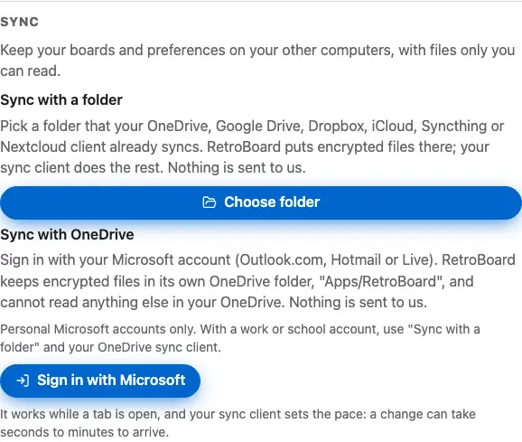
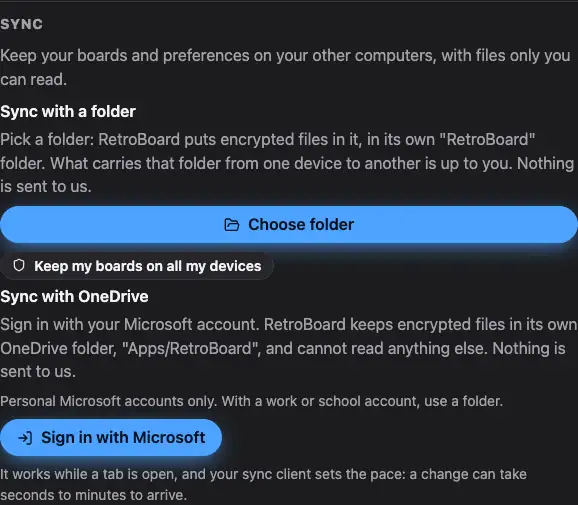
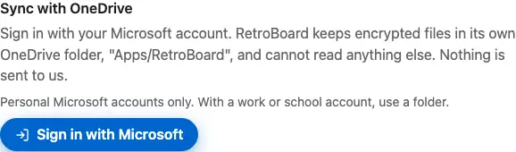
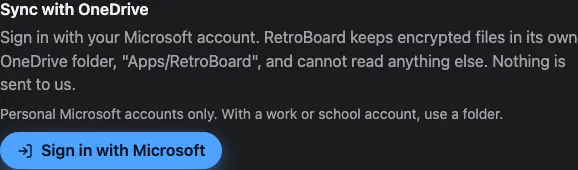

Sync with a folder
Keep your boards and preferences on your other computers, in encrypted files only you can read.
Sync keeps your boards and your preferences on your other computers, without an account of ours and without a server of ours. There are two ways. With a folder, you pick one that your OneDrive, Google Drive, Dropbox, iCloud, Syncthing or Nextcloud client already syncs: RetroBoard writes encrypted files in a RetroBoard folder inside it, and your sync client carries them to your other computers. It is just files. With OneDrive, where this site offers it, you press "Sign in with Microsoft" and RetroBoard keeps the same encrypted files in its own OneDrive folder, Apps/RetroBoard: it needs no sync client, so it also works on a phone and in browsers without the folder picker.
Your password and your recovery key. The first time, you choose a password of 12 characters or more. RetroBoard encrypts everything with a key that only the password (or the recovery key shown right after) can open. Print the recovery key, save it as a file or copy it, and keep it away from this computer. If you lose both your password and your recovery key, nobody, including us, can read what is stored: it cannot be recovered. Sync starts only after you tick the two boxes that confirm you stored the key and understood this. There is no way to sync without a password and no way to turn encryption off.
Changing computer. On the new computer, wait for your sync client to bring the folder (with OneDrive, just sign in with the same Microsoft account), open Preferences > Sync, choose the same folder and type the password (or use the recovery key). Your library appears within a moment. A board's content is read when you open it, so a long history never slows the first sync. Preferences and the library are merged: the most recent change of each setting wins.
What is synced. Your boards (kept offline when you created them, or ones you save to your library), the library, your preferences, your display name and your teams. Device settings (density, retention, notifications, Slack webhook) and every secret stay on the device.
What the folder's cloud, or OneDrive, can see. Only encrypted files with random names: roughly how many boards you have, the size of the files (rounded up to powers of two), when they change and how many devices you use, plus the folder path or the account it already knew. No title, note, name or setting is readable.
Limits. Folder sync works in Chrome, Edge, Opera and Brave on a computer, and only while a tab is open: pulls happen when you open the app, come back to the tab, regain the network, every minute (every 30 seconds on a board) and with "Sync now". Your sync client sets the pace, so a change can take seconds to minutes to arrive. Chrome asks again for the folder permission in some sessions: the status says "Allow folder access" and your edits wait on the device until you click. Safari, Firefox and phones can use OneDrive where it is offered, and otherwise keep their boards on the device as before.
OneDrive. Only personal Microsoft accounts (Outlook.com, Hotmail, Live) can sign in: with a work or school account, use the folder and your OneDrive sync client. RetroBoard asks Microsoft for access to its own folder only and cannot read anything else in your OneDrive. Microsoft asks a website to sign in again about once a day, so the status then says "Sign in again": one click, and after it you type the vault password again. The sign-in is a full-page trip to Microsoft and back, so do it between two retrospectives rather than during one.
Disconnect and forget. Stops syncing and removes the folder or the sign-in, the keys and the synced preferences from this browser. Your boards stay. You can also delete the vault files from the folder or from OneDrive: that asks for your password and deletes only RetroBoard's own files. Microsoft does not let an app end its own access: RetroBoard stays listed in your Microsoft account until you remove it at account.microsoft.com/privacy/app-access (the dialog links to it).
1 In the profile, the Sync section lets you pick a folder that OneDrive, Dropbox, Google Drive, iCloud, Syncthing or Nextcloud already syncs.
The Sync section is at the bottom of your profile. "Choose folder" opens your browser's folder picker. If the folder already holds a vault, RetroBoard asks for its password and never overwrites it; otherwise you create one. The toolbar then shows a small status (Synced, Syncing, Offline, Locked, Allow folder access, Folder not found, Waiting for a file from your sync client, Needs attention) with "Sync now" and the list of your devices in the dialog.


2 Where the site offers it, "Sign in with Microsoft" keeps the encrypted vault in RetroBoard's own OneDrive folder, with no sync client.
Where the site offers it, the Sync section also shows "Sync with OneDrive". "Sign in with Microsoft" takes you to Microsoft and back to the page you were on, with the Sync section open: if your OneDrive holds no vault yet you create one (password, recovery key), and if it does you type its password. The toolbar status is the same as for a folder, with "Sign in again" when Microsoft asks you to.

